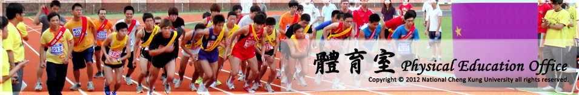

國立成功大學慶祝八十四週年校慶暨運動大會
20人21腳競賽規程
壹、活動宗旨：
慶祝本校校慶，培養團隊合作精神與聯絡師生情誼，特辦理本活動。
貳、比賽日期
104年11月11日(星期三)，上午07:15開始檢錄、上午07:30比賽。
參、比賽地點
本校光復校區田徑場舉行
肆、競賽分組
1.競速組：採計時決賽，取前六名。
2.創意組：競賽限時3分鐘；由評審依整體創意(30%)、團隊精神(25%)、 動作運用(25%)、其他（如口號、音樂選用等）(20%)等項目得分， 擇優取3名，名次得從缺。
3.於報名時勾選分組，得同時勾選兩組競賽（一次出賽）。
伍、報名辦法
1.日期：104年10月1日(星期四)上午9點起至104年10月26日(星期一)下午5點截 止或依序25隊額滿為止。
2.報名網址：請至本室網頁完成線上報名即可。
陸、比賽規則
1.凡本校教職員工生可自由組隊參加，自行命名並提供50字內之單位介紹詞。
2.每隊含替補選手可報名25人，出賽人數20人，未達出賽人數者，不予出賽。
3.每人以報名參加乙隊為限。
4.出場序於11/06（五）公開抽籤並於活動網站公告。
5.比賽當天上午07:15前至檢錄處完成報到，唱名三次未到者以棄權論。
6.每隊每人須跑完全程50公尺，違者成績不予計算。
7.出賽選手綁腳布條不得於比賽中鬆落，違者該隊成績不予計算。
8.競速組成績採計時方式以裁判鳴槍起至全部20人通過終點線之時間為準。
9.報到時請檢附學生或教職員證明文件備查，違者成績不予計算。
10.各參賽隊伍應自備護具（安全帽、護膝、護肘），以維活動安全。
11.出賽選手名單須應同報名表，選手未經報名註冊者，不得出場比賽。
12.申訴事件各隊應於比賽結束30分鐘內，以書面說明申訴事由，並俱單位 聯絡人簽章，送至競賽組始完成申訴申請。
13.如無明文規定之疑義，由裁判委員會完成最終判決。
捌、獎勵：
| 獎勵 | 競速組 | 創意組 |
| 第一名 | 10,000 | 4,000 |
| 第二名 | 6,000 | 2,000 |
| 第三名 | 4,000 | 1,000 |
| 第四名 | 3,000 | ※ |
| 第五名 | 2,000 | ※ |
| 第六名 | 1,000 | ※ |
備註：活動參與時，建議穿淺色長袖衣褲，或使用防蚊藥品，並建議噴灑 或塗抹在皮膚裸露處，在皮膚表面形成保護膜以預防蚊蟲叮咬。